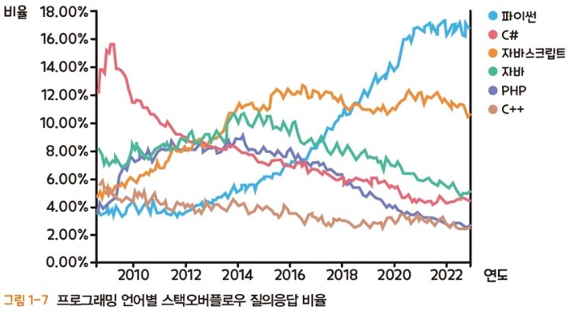

1. Python 소개 및 설치
1.1. Python 소개
- 컴퓨터 프로그램과 프로그래밍 언어
- 컴퓨터 프로그램 (computer program) : 컴퓨터로 문제를 해결하기 위해 작성하는 명령어의 모음
- 프로그래밍 언어(programming language)
- 컴퓨터에 어떤 동작을 수행하도록 지시하는 언어
- 프로그래밍 언어를 사용하여 프로그램을 논리적으로 작성하는 작업을 코딩(coding)이라 함
- Python
- 1991년 귀도 반 로섬(Guido van Rossum)이 개발한 프로그래밍 언어
- 빅데이터 분석과 인공지능 분야에서 가장 널리 사용되고 있음
- 문법이 쉽고 간결하여 프로그래밍을 처음 접하는 사람이 배우기 적합함
- Python 특징
- 플랫폼 독립적인 언어 : 컴퓨터 운영체제나 하드웨어의 종류에 관계없이 사용할 수 있음
- 인터프리터 언어 : 소스코드 자체가 바로 실행되어 간편하게 사용할 수 있음(속도는 느림)
- 동적 타이핑 언어
- 프로그램의 실행 시점에서 각 프로그램 변수의 타입(type)을 결정하는 언어
- 인터프리터 언어이므로 프로그램의 실행 시점에 변수들의 메모리 공간을 자유롭게 할당받을 수 있음
- 객체 지향 언어
- 프로그램이 해결해야 할 문제의 구성요소를 요소별로 정의한 다음, 각 요소의 기능(method)과 정보(attribute)를 프로그래밍한 다음 요소들을 결합하는 방식으로 프로그램을 작성함
- 이때 각 요소를 객체(object)라고 하며, 한 번 만들어진 객체는 재사용(reusability)할 수 있음

1.2. Python 설치
1.2.1. Jupyter Notebook과 Jupyter Lab
- Jupyter Notebook
- 가장 많이 사용되는 Python IDE 중 하나로, 웹 브라우저에서 실행되는 대화형 개발 도구
- 코드 작성과 실행을 한 화면에서 쉽게 수행할 수 있으며, 텍스트(markdown), 수식(LaTeX), 그래프(Matplotlib) 등을 함께 포함할 수 있음
- 실행 결과가 셀 단위로 저장되어, 데이터 분석 과정을 논리적인 흐름으로 문서화하여 공유하기 용이함
- 특히 데이터 과학, 머신러닝, 교육, 연구 분야에서 많이 활용됨
- Jupyter Lab
- Jupyter Notebook을 확장한 차세대 인터페이스로, 더욱 유연하고 강력한 기능을 제공하는 개발 환경
- 탭(tab) 기반 인터페이스를 지원하여 여러 개의 노트북, 터미널, 텍스트 파일, 콘솔 등을 동시에 열고 작업할 수 있음
- 코드 편집, 데이터 분석, 시각화 등 데이터 과학 및 머신러닝 작업에 최적화된 다양한 편의 기능이 포함됨
- 파일 브라우저, 터미널, markdown 편집기, 확장 플러그인 지원 등으로 보다 통합적인 워크플로우 제공
- Jupyter Notebook과 호환되며, 확장성을 고려하여 설계되어 다양한 플로그인 추가가 가능함
- 가상 환경(virtual environment)
- 독립적인 작업 공간을 제공하여, 하나의 컴퓨터에서 여러 프로젝트를 각각의 독립된 환경으로 격리하여 실행할 수 있음
- 하나의 시스템에서 여러 버전의 Python, 라이브러리 등을 설치하고, 프로젝트마다 서로 다른 버전의 의존성을 관리할 수 있음
- 충돌 방지 및 의존성 관리에 유용하며, 특정 프로젝트에 필요한 패키지나 라이브러리만 설치하여 다른 프로젝트에 영향을 주지 않음
- 프로젝트 간의 의존성 충돌을 피하고, 재현 가능한 환경을 제공하여 코드의 안정성을 높이고 협업을 용이하게 함
- 가상 환경을 만든 후, Jupyter Lab 설치 및 실행
- Anaconda3 설치
- Anaconda Prompt 실행
- 가상 환경 생성 :
conda create -n myenv python=3.9 - 가상 환경 리스트 조회 :
conda info --envs - 가상 환경 접속(활성화) :
conda activate myenv - 가상 환경에서 Jupyter Lab 설치 :
conda install -c conda-forge jupyterlab - Jupyter Lab 접속 :
jupyter lab
1.2.2. Google Colab
- Google Colab
- 구글에서 제공하는 클라우드 기반의 Jupyter Notebook 개발 환경으로, 웹 브라우저에서 Python 코드 작성 및 실행이 가능함
- 별도의 설치 없이 바로 사용할 수 있으며, 구글 드라이브와 연동하여 작성한 파일을 클라우드에 저장하고 쉽게 관리 가능
- 다양한 라이브러리(Numpy, Pandas, Matplotlib 등)가 기본적으로 설치되어 있음
- GPU, TPU 지원을 통해 대규모 데이터 처리와 딥러닝 모델 학습에 유리함
- 협업 기능을 제공하여, 여러 사람이 동시에 실시간으로 작업하고 프로그램을 공유할 수 있음